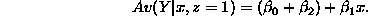
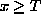
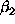

Concise regression review notes are available from Stat608 1997 homepage.
The model for the mean relationship:

The model for the raw data:

This is the straight line or linear model.
Assumptions are mostly on the .
Biggest problems. Dependence, skewness and non-constant variance.
ALWAYS check assumptions on the residuals.
Why so important?
Key diagnostics.
1. Residual plot. Good plots lack structure.
2. Normal scores plot of the residuals.
More depth.
What's behind a normal scores plot?
Most model diagnostics (here the model is the normal distribution for the error terms) compare reality (what we observe) to theory (what we expect). In general OBSERVED versus EXPECTED.
This is how the normal scores plot is constructed.
Extension.
There is no reason why for the X-axis we have to use the normal distribution, perhaps the data has a gamma distribution (useful for life length data). You just calculate where you EXPECT the data to be if a gamma distribution is true. These more general plots are called " Quantile-Quantile plots" or Q-Q plots.
Heavy tailed residuals.
The ends of the normal scores plot have greater slopes than the reference line because the observations in the tails are spreading out more than the normal theory predicts.
One reason for heavy tails. The residuals come from TWO groups with different variances. Always leads to heavy tails. Interpretation: two different volatility regimes, low and high.
Graphical observation generates sensible questions.
Enables comparisons between groups while accounting for other related variables - Amazonian Indian Stress Study.
First case: a single dichotomous variable. Our example: Pre 1980 vs Post 1980.
The way JMP does it: model
where z = 1 if observation is in the first group and -1 if observation is in the second group.
Check to understand the model: plug in z = 1 and -1.
Group 1 model



Group 2 model


Compare Group 1 and Group 2.
Av(Y|x,z=1) - Av(Y|x,z=-1) is the difference in height between the two regression lines.
Notes.
There are many different types of coding schemes for categorical variables. We will investigate them in more detail.
Example from the Gold data set.
Consider Q-Q plot of one set of residuals against the other.
On to interaction in categorical variables (non-parallel lines).

Useful for systems that may suffer a "shock".
Another application of categorical variables.
Model:

where z = 0 if x < T and z = 1 if  , and T is the "breakpoint".
Case 1, x < T, plug in to get

Case 2, , plug in to get
Slope before T is , slope after T is .
Therefore  measures the change in slope after time T.
Implementation in JMP.
Technical name: Piecewise linear regression.
Issues: searching for the breakpoint.